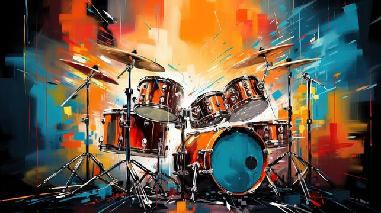

Best Instrument
A bateria é um instrumento musical de percussão que consiste em um conjunto de tambores e pratos, tocado por meio de baquetas. É uma das principais bases rítmicas em muitos estilos musicais, incluindo rock, jazz, pop, funk e blues. A bateria é composta, geralmente, por um bumbo grande (que gera uma sonoridade profunda), um ou dois tons (tam tam), um surdo (ou caixa), e pratos, que podem incluir o hi-hat, pratos de ataque e pratos de deslize.
